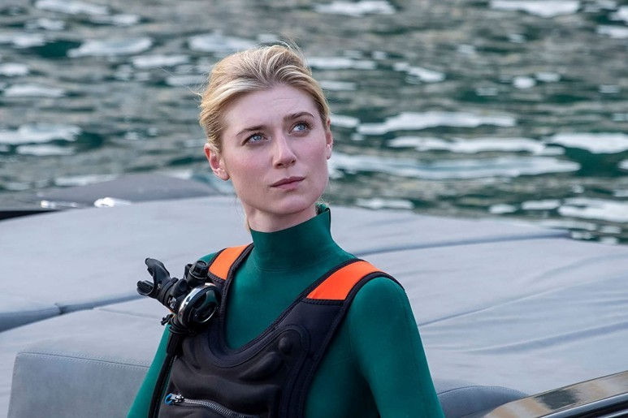
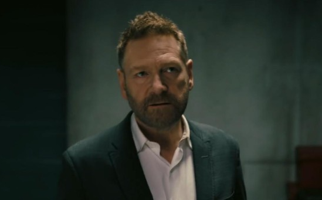

등장인물
주도자 - 존 데이비드 워싱턴
'제3차 세계대전'을 막기 위해 투입된 CIA 요원

닐 - 로버트 패틴슨
뭄바이에서 활동하는 CIA 요원으로, 주도자를 돕는다. 항상 웃는 모습으로 능글맞은 면모가 있으나, 보기와 달리 현장 상황을 유연하게 대응하는 면모를 보이는 노련한 요원이다.
캣 - 엘리자베스 데비키
'캐서린 '캣' 바튼. 미술품 감정사로, 남편 사토르와 '남보다 못한 사이'며, 협박과 감시와 통제를 당하는 삶을 살고 있다. 특히 사랑하는 아들과 자신을 떼어놓으려는 것에 대한 복수심이 가득하다.
안드레이 사토르 - 케네스 브래너
영국 국적을 가진 러시아인으로, 구 소련의 비밀 도시에서 시작한 무기 밀매업으로 엄청난 부를 쌓은 것으로 대외적으로 알려져 있는데, 의문의 행보를 보이면서 주도자의 추적을 받는다. 자신의 목적을 위해서라면 범법과 폭력, 살인도 마다하지 않는다.
